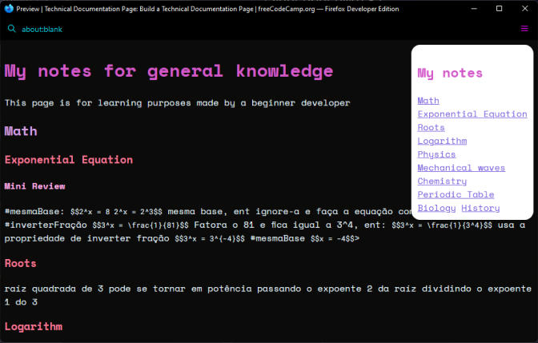
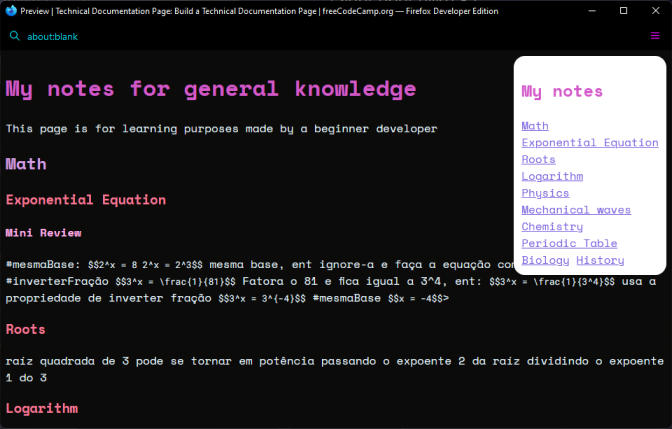

Technical Documentation page
Esse projeto foi parte do currículo do freecodecamp. Usei como conteúdo minhas anotações em markdown e mathjax para as fórmulas matemáticas
asdlfasjs;dfçlaskdjf
Esse projeto foi parte do currículo do freecodecamp. Usei como conteúdo minhas anotações em markdown e mathjax para as fórmulas matemáticas
Também parte do currículo freecodecamp.A empresa IoTarc não de fato existe, foi aleatóriamente gerada.

No currículo da freecodecamp foi requisitado uma página em tributo a alguém e escolhi Cássia Eller, uma cantora brasileira muito importante para a música brasileira